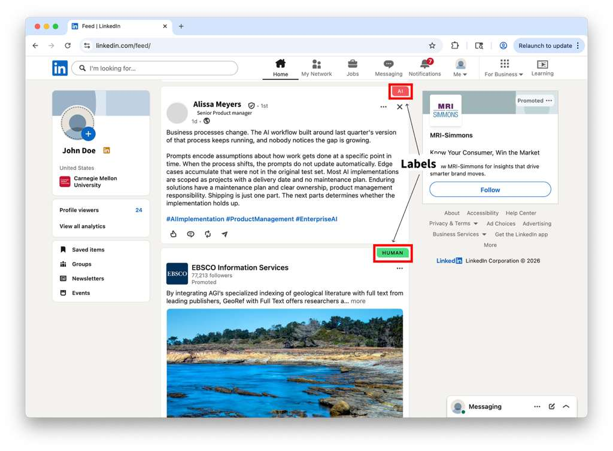

Social AI Feed Detector
Loading…
Enter your Prolific Participant ID below to begin.

Thanks for taking part. Your Participant ID is linked.
You can close this tab now — open LinkedIn and scroll your feed normally.
Posts will be scored as you encounter them.